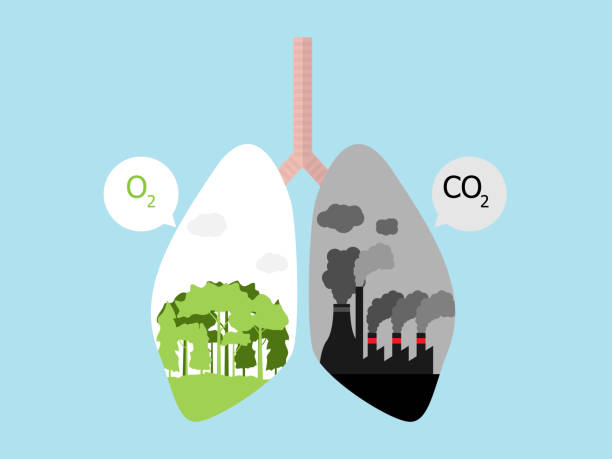

Агаар Бохирдол

Өрөөнөөсөө гарахдаа гэрлээ унтраах нь цахилгаан хэмнэж, хэрэглээний төлбөрөө бууруулахад зайлшгүй шаардлагатай.
Гэрийн эзний хувьд гэрлээ ашиглаагүй үедээ унтраах нь цахилгааны төлбөрийг бууруулах,
чийдэнг бага худалдан авах зэргээр мөнгө хэмнэхэд тусална.
Агаар бохирдуулагч нь уур амьсгалын өөрчлөлттэй нарийн холбоотой.
Хар нүүрстөрөгч, озон зэрэг зарим бохирдуулагч нь агаар мандалд дулааныг барьж,
дулааралтыг нэмэгдүүлдэг бол зарим нь хүхрийн давхар исэл нь гэрлийн тусгал үүсгэдэг хэсгүүд нь
уур амьсгалыг хөргөх нөлөөтэй байдаг.

Яндангийн шүүлтүүрийг ашиглах
Айл гэр, үйлдвэрийн задгай зуухнаас ялгарч буй хий нь агаарын бохирдолд нэн аюултай бөгөөд агаарын чанарыг маш ихээр сүйтгэдэг.
Шүүлтүүр ашиглах ёстой
бөгөөд энэ нь агаарт шингэж буй хортой хийн нөлөөг багасгахад тусална.
Гэртээ янз бүрийн өөрт таалагдах ургамал мод оо тарьснаар өөрийн гэрт цэвэр хүчилтөрөгчийг ялгаруулж болно